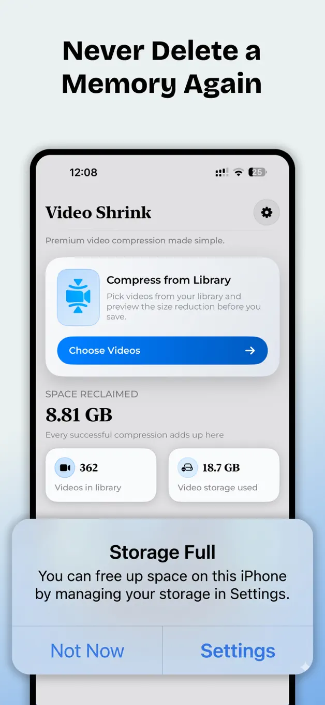
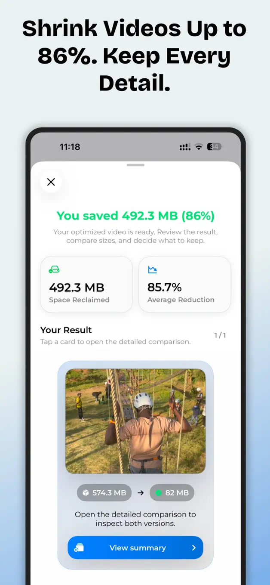
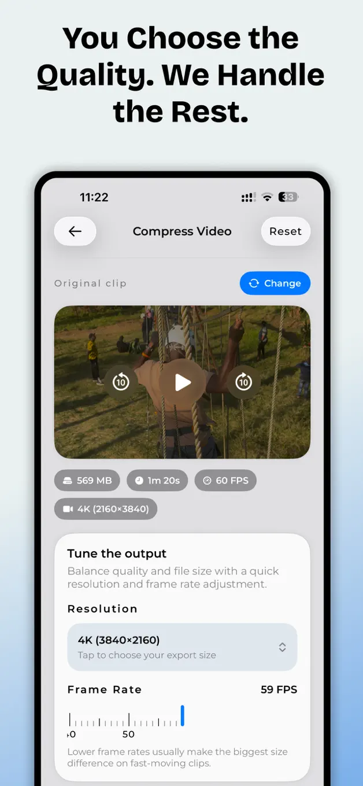

Compress with confidence
Use balanced presets to reduce file size while preserving strong visual quality.
Video Compressor & Resizer
Compress videos by up to 80%, tune resolution, frame rate and bitrate, and see the expected storage savings before you save or share the result.

What VideoShrink does
VideoShrink gives you control over storage, quality and shareability without burying the useful settings.
Use balanced presets to reduce file size while preserving strong visual quality.
Adjust resolution, frame rate and bitrate for the quality-to-size balance you need.
Review compression stats, choose what happens to the original and export without a watermark.
How it works
Choose the clip, set the balance and see exactly how much storage the new file can save.
Select a clip from the library or add several videos for batch compression.
Pick a preset or customise resolution, frame rate and bitrate.
Review the result, save the smaller copy and share it where you need it.
Inside VideoShrink
Clear controls, useful previews and visible storage savings.


Frequently asked
Depending on the source and settings, VideoShrink can reduce a file by up to 80%. Results vary with length, resolution, frame rate and bitrate.
VideoShrink supports common iPhone and iPad formats including MP4, MOV and M4V.
Yes. Use a preset or adjust resolution, frame rate and bitrate to choose your preferred balance between quality and file size.
No. Exported videos are not branded with a VideoShrink watermark.
You can keep the original or choose to remove it after confirming that the compressed result is safely saved.
Make large videos easier to keep, send and back up while staying in control of the quality.
Download VideoShrink